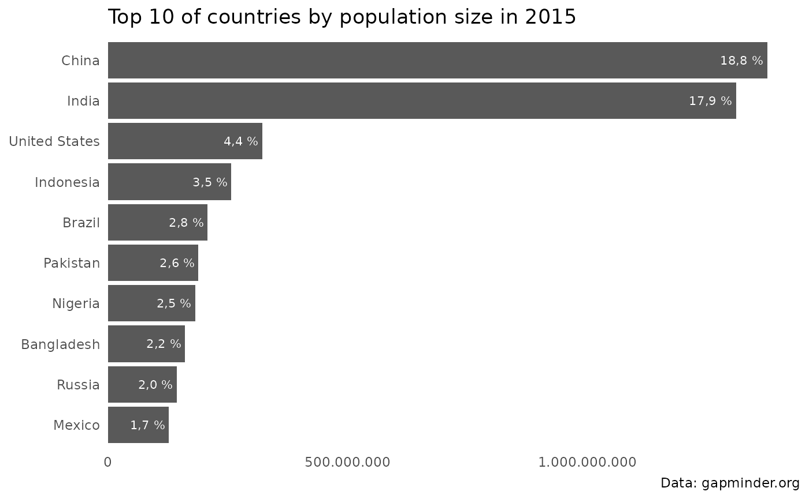

The problem
The scales package provides a family of easy to use
functions like scales::label_number or
scales::label_percent to format numbers in decimal format,
as percentages or currencies, which could also be passed to the
labels argument of ggplot2s family of scale
functions to format axes or legends.
However, let’s say you have to prepare a report or charts where you have to use country-specific style conventions to display numbers which differ from the default anglo-american style.
While that could be achieved with the scales package as
well, in practice formatting numbers and styling axes quickly becomes
cumbersome and annoying as you always have to
-
set the decimal and grouping marks (if deviating from the defaults) so you end up with
scales::label_number(big.mark = ".", decimal.mark = ",")(x)to format a number
xin decimal format according to style conventions found in many European countries. -
provide a suitable labeller function to the
labelsargument ofscale_xxx_yyyso you end up withscale_x_continuous( labels = scales::label_percent(big.mark = ".", decimal.mark = ",") )to display numbers on the x axis as percentages using the style convention found in many European countries.
As of scales 1.4.0 (released 2025-04-24), you no longer
have to repeat big.mark/decimal.mark on every
single call within a session — a new
scales::number_options(decimal.mark = ",", big.mark = ".")
sets these (and style_positive/style_negative,
and currency-specific equivalents) as global defaults for every
subsequent label_number()/label_currency()
call. That closes part of the gap above for a single country’s
conventions applied for the rest of a session — but it’s still one
global default at a time. It doesn’t help if you need several countries’
conventions side by side in the same report or chart (like the G20
example in the README), and it
doesn’t touch the harder problems countryscales also
handles under the hood: correct currency symbol/sign positioning and
locale-correct percent-sign placement and spacing.
The solution
A first and simple solution to this problem would be to add some simple wrappers at the beginning of your R script or R markdown document like
my_label_number <- function() {
scales::label_number(big.mark = ".", decimal.mark = ",")
}But then you end up copy and pasting from one report to the next, so sooner or later you probably put these helpers inside package.
And that’s the goal of countryscales: Providing
out-of-the-box helpers to format numbers using country-specific style
conventions.
As a first example consider formatting a number according to style
conventions used in Germany and several other European countries where a
dot (.) is used as the big mark or grouping mark or
thousands separator and a comma (,) as the decimal
mark.
Using scales::label_number this requires switching the
default decimal and big marks:
library(scales)
label_number(big.mark = ".", decimal.mark = ",", accuracy = .1)(x)
#> [1] "12.345.690,0"Using countryscales this could be achieved with less
typing using countryscales::label_number_de:
library(countryscales)
label_number_de(accuracy = .1)(x)
#> [1] "12.345.690,0"To provide an example of using countryscales with
ggplot2 let’s first prepare a small example dataset of the
top 10 countries according to population size:
top10_pop <- gapminder15[order(-gapminder15$pop), c("country", "pop")]
top10_pop$pct <- top10_pop$pop / sum(top10_pop$pop)
top10_pop <- head(top10_pop, 10)As a basic example let’s make a simple barchart of population size by country
library(ggplot2)
p <- ggplot(top10_pop, aes(pop, reorder(country, pop))) +
geom_col() +
theme_minimal() +
theme(
panel.grid.major = element_blank(),
panel.grid.minor = element_blank()
) +
labs(
x = NULL, y = NULL,
title = "Top 10 of countries by population size in 2015",
caption = "Data: gapminder.org"
)While this chart is fine it’s not ready for publication. Let’s say we want to display population sizes on the x axis in decimal format and additionally add the share of each country on World population formatted as percentages as labels to the bars using German style conventions.
Using scales this could be achieved like so:
lbl_pct <- label_percent(big.mark = ".", decimal.mark = ",", accuracy = .1)
lbl_num <- label_number(big.mark = ".", decimal.mark = ",")
p +
# Add percentages to bars using German style conventions
geom_text(
aes(label = lbl_pct(pct)),
hjust = 1.1, size = 8 / .pt, color = "white") +
# Format numbers as percentages
scale_x_continuous(
labels = lbl_num,
expand = c(0, 0, .05, 0))As this simple example shows displaying numbers in decimal format or as percentages requires some typing, especially if you want to or have to deviate from default decimal and grouping marks.
That’s where countryscales comes in handy as using
label_percent_de and scale_x_number_de the
same could be achieved with less typing like so:
p +
# Add percentages to bars using German style conventions
geom_text(
aes(
label = label_percent_de(accuracy = .1)(pct)
),
hjust = 1.1, size = 8 / .pt, color = "white"
) +
# Format numbers as percentages
scale_x_number_de(expand = c(0, 0, .05, 0))
Beyond Germany
Every example above uses
label_number_de()/scale_x_number_de(), but
that’s just the tip of the iceberg. Under the hood, all of these
delegate to a general-purpose locale engine,
label_number_locale()/ scale_x_number_locale()
(and their _percent_/_currency_ counterparts),
which work with any of the 764 locale codes countryscales
supports – run show_locales() to list them all. On top of
that engine, countryscales also ships the same ready-to-use
_de()-style convenience family for 27 countries, from
Argentina to the United States (see the reference
index for the full list).
Getting locale-specific formatting right also involves more than just
the decimal and grouping marks shown here: correct currency symbol and
sign positioning (which side of the number, with or without a space) and
locale-correct percent-sign placement and spacing are full of exceptions
that scales::label_number()/label_currency()
don’t attempt to solve. countryscales handles these under
the hood using a modified version of label_number() – see
the README’s
Credits section for the full story.